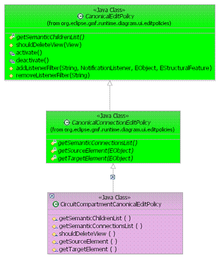
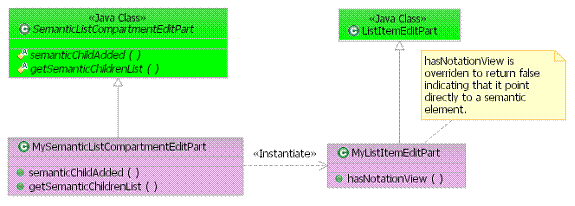

Tutorial: Canonical Containers
|
Version: 0.1 |
Date: |
Contents
· Overview
· Installing canonical behavior on a container
· Ability to toggle canonical behavior on or off
· Creating an EditPart that points directly to a semantic element
· Summary
Overview
This tutorial provides the reader with the steps to on how to support
canonical behavior with-in a container. Canonical is the terminology we
use to describe a container that keeps its notation views synchronized with the
semantic children. i.e. 1-1
relationship between semantic and notation. In GMF there are two model
layers, one for describing the notation elements on the diagram and another for
the semantic model that the notation elements will reference. Please see
the Programmers
guide for more detailed information regarding GMF runtime
architecture. Due to this two tiered model there is need for management
between the two layers if the user wants to see a full view of the semantic
containment without having to manually create notation views for underlying
semantic elements.
This behavior is also optionally installable since sometimes it may be desirable to see a partial view of the semantic model. If we consider a UML class diagram, the user will typically only be interested in a subsection of a system rather then the whole system (or even the whole contents of a package). In this case, the user will want to selectively create views to construct their diagram and probably wouldn’t want views being automatically created on the diagram when added semantically.
On the other hand, if we consider a logic circuit, it doesn’t make sense to view the semantics partially. All the elements in the circuit play a critical role in the functionality of the circuit that would be misleading if some semantic element wasn’t displayed. In this case, we want to ensure that notation views are synchronized automatically with the semantic elements to display a full view.
References
This tutorial references the following tutorial:
Containment
of shapes
Introduction
In this tutorial, we will use the Logic Diagram Example to illustrate how to install a canonical edit policy on a circuit shape that can contain other logic elements (i.e. LED, And Gate etc.). To gain familiarity with the Logic Diagram Example, refer to the Logic Example Guide.
Installing canonical behavior on a container
The first way of instrumenting the canonical behavior is to install an EditPolicy that manages the behavior on the EditPart container. There are two main classes in the Canonical hierarchy that can be used as a base class. The CanonicalEditPolicy is the root class, but can be subclassed by clients if they are not interested in synchronizing relationships. If nodes and edges need to be synchronized, then the CanonicalConnectionEditPolicy should be used as a base class.
Canonical EditPolicy Usage:

For the purposes of this tutorial we will consider a container that needs to synchronize both the semantic elements and relationships. In the logic example, the CircuitEditPart needs to keep it’s view contents in sync with the semantic logic elements. Since both logic elements and wires are displayed we will subclass from the CanonicalConnectionEditPolicy to accomplish this.
Example: Circuit Shape displaying containment

Step 1: Create new CanonicalConnectionEditPolicy subclass. Upon creation of the class you’ll notice that there are 4 abstract methods that need to be filled in.
getSemanticChildrenList: Returns the list of semantic elements that are to be synchronized with the notation node children of the container.
getSemanticConnectionsList: Returns the list of relationships or semantic elements that are to be synchronized with the notation edges associated with the container.
getSourceElement: Given a semantic element that is to be represented as a notation edge in the container, return the source element that this semantic element is attached to.
getTargetElement: Given a semantic element that is to be represented as a notation edge in the container, return the target element that this semantic element is attached to.
After overriding these 4 methods, the EditPolicy is ready to be installed. For more custom behavior, you may wish to override the CanonicalEditPolicy#shouldDeleteView method which determines if a particular view should be deleted if it has an element that doesn’t meet the canonical criteria. This method is called, when the CanonicalEditPolicy determines that the view is an “orphan”, meaning it has no semantic element, it is a duplicate of another view, or the reference semantic element is not found in the CanonicalEditPolicy#getSemanticChildrenList.
Step 2: Add any listeners to your semantic model if needed. By default, the edit policy is listening to the semantic element who owns the view which has the edit policy installed on it. If you container is more complex you may need to add additional listeners to ensure that synchronization occurs at the right time. The listeners should be added in the EditPolicy#activate method, and removed in the corresponding EditPolicy#deactivate method. Refer to the following methods for adding / removing listeners: CanonicalEditPolicy#addListenerFilter and CanonicalEditPolicy#removeListenerFilter
Step 3: To activate your EditPolicy you need to install it on your EditPart container against the EditPolicyRoles.CANONICAL_ROLE.
i.e.
protected void createDefaultEditPolicies(){
super.createDefaultEditPolicies();
installEditPolicy(EditPolicyRoles.CANONICAL_ROLE, new CircuitCompartmentCanonicalEditPolicy ());
}
Ability to toggle canonical behavior on or off
It could be that the container may wish to optionally support the canonical synchronization. In this case the edit policy described above needs to be disabled or deactivated. This capability is built into the infrastructure, but requires the client to install a style that is a trigger for turning on / off the canonical behavior.
The CanonicalStyle is a style on a view that indicates whether or not the
Canonical editpolicy behavior is active or not. If the style property is
turned off, then the CanonicalEditPolicy listens and automatically will no
longer synchronize the semantic model and create / delete notation views
accordingly.
To install the CanonicalStyle on your notation view that is to support the canonical behavior, you need to override the AbstractViewFactory#createStyles method in your View factory class.
i.e.
protected List createStyles(View view) {
List styles = super.createStyles(view);
styles.add(NotationFactory.eINSTANCE.createCanonicalStyle());
return styles;
}
After the style is installed, it is exposed in the UI through the advanced tab where the user can toggle the capability on or off and the CanonicalEditPolicy that is installed on the shape responds accordingly.
Creating an EditPart that points directly to a semantic element
Another way to instrument the canonical behavior is less flexible but performs better in terms of memory usage and synchronization time. This method in effect bypasses the synchronization between semantic and notation because there are no notation elements created to display the semantic elements. The EditParts in the container point directly to the underlying semantic elements. This technique is useful if the elements being displayed in the container aren’t user configurable in terms of display. Or perhaps they inherit their display capabilities from the parent.
An ideal usage of this
technique is for list compartments that display a list of elements. The
list of elements most often have a derived position in the container and are
displayed is a consistent manner (i.e. no list item looks different then any
other list item except for its contents). This is where the
SemanticListCompartment is best utilized.
Semantic List Compartment usage:

Step 1: Create a new ListItemEditPart subclass that overrides the GraphicalEditPart#hasNotationView method to return false. This new EditPart subclass will point to the semantic element directly instead of pointing to a notation view.
Step 2: Create a new subclass from SemanticListCompartmentEditPart and implement the abstract methods.
semanticChildAdded: This method lets clients directly hook in their EditPart instead of delegating to the EditPartService. The implementation is expected to instantiate the ListItemEditPart subclass from step (1.) and insert it into the list.
getSemanticChildrenList: Same method signature and client contract of the CanonicalEditPolicy#getSemanticChildrenList. Returns the list of semantic elements that are to be displayed inside the container.
Summary
In this tutorial, we did the following:
- Created a container that has its notation views synchronized with the underlying semantic elements by using the CanonicalEditPolicy hierarchy.
- Learned how to make the canonical behavior installed by the CanonicalEditPolicy as optional
- Learned how to create a container that contains EditParts that point directly to the semantic elements.